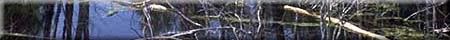

Water Transport Through
Plant Stems
Six stem cuttings of coleus (each about 15 cm long), scalpel, six small beakers, water, eosin stain or red ink, hand lens, petroleum jelly.
1. Put the same amount of water into each beaker (several cm),
remove some of the lower branches from the coleus stems, and insert
one coleus cutting into each beaker. At an angle, cut off 2 cm
from the lower end of each cutting while the end is underwater.
Do not remove the cuttings from the water. (This step removes
from the stem any air bubbles that may interfere with the activity.)
2. Coat the surfaces of all the leaves of one cutting with petroleum
jelly. Number the untreated cuttings from no. 1 to no. 5 and the
one with the petroleum jelly no. 6.
3. Add the same amount of eosin or red ink to each beaker so the water becomes deeply coloured.
4. Put cutting no. 1 in a dark drawer or cupboard and cutting
nos. 2 to 6 under a bright light. Leave cutting nos. 1, 5, and
6 for 24 h.
5. After 15 min., examine the stem and leaves of cutting no. 2.
Make cross-sections at regular intervals up the stem. Examine
them with a hand lens. Record the distance (if any)the stain has
traveled. Make a cross-section of one of the lower leaf petioles
(the stalk connecting the leaf to the stem) to see if any stain
is present.
6. Thirty minutes after adding the stain to the beaker, examine
cutting no. 3 in the same manner as in step 5 above.
7. Repeat step 5 after 45 min. with cutting no. 4.
8. The next day, examine cuttings nos. 1, 5, and 6 as instep 5.
Design a table to record all your observations.
Note: Coleus are common annual plants found in most garden centres.
- Describe any differences among cuttings nos. 2, 3, and 4 on the first day.
- Why were five of the cuttings put in bright light for this activity?
- Did cutting no. 5 absorb more dye after 24 h than cutting no.4 had after 45 min.? Account for your observations.
- What effect did petroleum jelly have on the uptake of water? Why would this be so?
1. What do you think would happen to the tree if its root system or crown were suddenly reduced by half?
2. Imagine the world if there were no forests above the height of 10 m. Select one of the following topics (or come up with your own) and describe how things would have to change to accommodate the 10 m limit: house construction, paper production, animal habitat, fire fighting techniques.